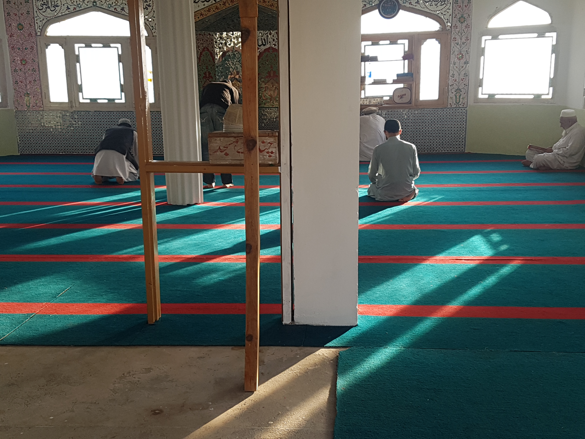
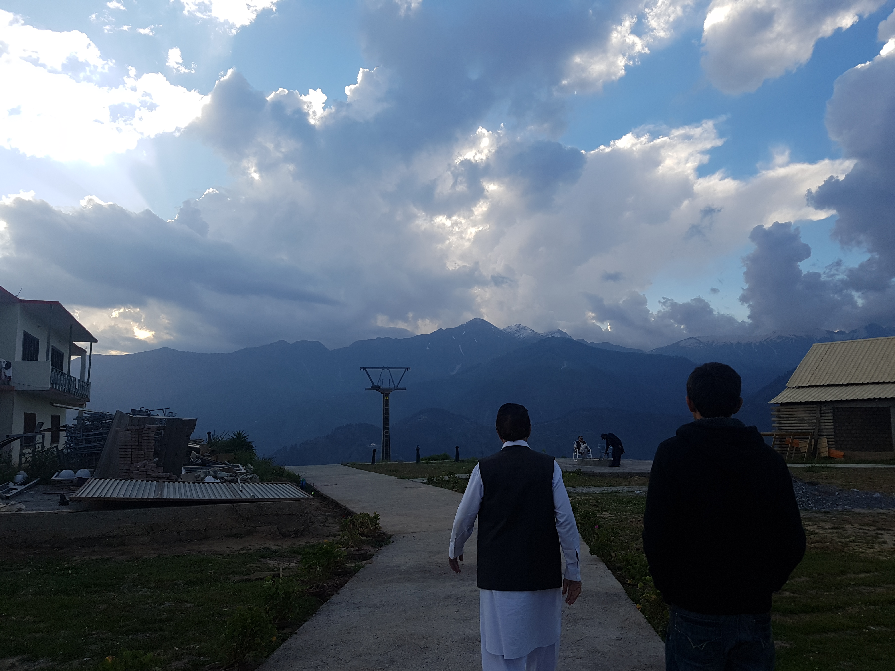
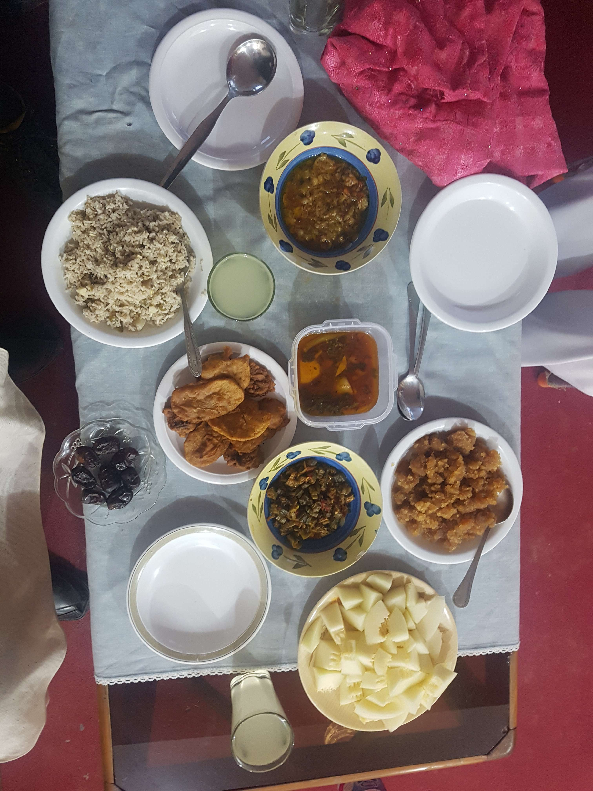

쇼그란에서 만난 젠틀맨 아저씨
2017년 06월 07일
파키스탄
나는 다시 자신감이 생기고 있다. 앞으로 무엇이든 정말 잘 해낼 수 있을것 같다. 여행을 마치고 돌아가면 진정으로 내가 만들고 싶은, 그리고 대중이 즐거워할 만한 것을 만들어 보고싶다. 그동안 어디서 만들지가 중요했던것 같다. 한국에서? 어떤회사에 들어가서? 하지만 이제는 어디서 만들지 장소는 중요하지 않다고 생각한다. 전세계 어디서든 만들 수 있다. 소속된 회사나 지역은 중요하지 않다. 내가 여행을 통해 매일같이 지역을 옮기면서 느끼는 것이다.
이곳 Shogran은 무척 작은 마을이기 때문에 딱히 무엇을 할것은 없었다. 파키스탄에서 오랫만에 만난 숲이 반가워서 숲에 한번 다녀오기로 했다. 사람들에게 물어물어 숲으로 갔고 거기엔 역시 아무도 없었다. 여기는 사람이 정말 없어서 좋다. 기대했던 평지 숲은 없었고 계속 산으로 오르는 언덕 코스였다. 너무 높이 올라가기는 힘들어서 대충 조금 만 올라갔다. 너무 빨리 내려가면 또 할게 없기 때문에 그냥 숲속에 앉아있었다. 그리고 대충 시간을 때운뒤 내려왔다.
내려와서 이곳의 가장 큰 호텔인 파인트리 호텔 정원을 걸었다. 거기서 어떤 젠틀맨 아저씨를 만났고 또 새로운 대화가 시작되었다. 그리고 그의 동생과 아들 손자도 곧 만나서 이야기 했다. 레마한 아저씨는 의사 선생님이다. 라마단 기간에 휴가로 이곳에 왔다고 한다. 한 30분 정도 이런저런 흥미로운 대화를 했다. 그러다가 아저씨가 갑자기 저녁식사를 같이 하겠냐고 했다. 감동.. 역시 파키스탄 사람들은 최고다. 현지인들과 어울릴 수 있는 기회 뿐만 아니라 오늘 저녁 식사비용도 아꼈다.

말리쿠 레마한 맨왼쪽, 레마한 아저씨
우리는 다시 레마한 아저씨가 묶는 호텔 쪽으로 천천히 걸었다. 호텔 마당엔 영화촬영이 진행 중이었다. 조금 쉬다가 근처 모스크를 방문했다. 그뒤 내가 가보지 않았던 구석구석 걸었다. 거기엔 현재 짓고 있는 케이블 카도 있었다. 1~2년뒤에 케이블카가 완성된다고 하는데 그때 다시오면 정말 멋질것 같다. 이 정보는 어떤 가이드북에도 나와있지 않은 빅 정보였다.

모스크의 아름다운 색감.

우리는 같이 마을 구석구석을 걸었다. 멀리 보이는 기둥이 현재 짓고있는 케이블 카 기둥.
쇼그란은 주위가 산으로 둘러쌓여 있는데 항상 구름이 끼고 낮시간대에는 산을 타고 적운형 구름이 형성되어 비가 내린다. 그리고 천둥소리가 낮시간에 항상 들린다. 무척 흥미로운 날씨다. 적운형 구름이 항상 서쪽에 깔려있는데 그 뜻은 노을이 항상 개 멋있다는 뜻이다. 이곳은 항상 노을이 멋진곳이다. 해가 지는 서쪽에 구름이 겁나 멋지기 때문이다.
드라마틱한 쇼그란 서쪽의 구름과 노을.
그리고 저녁식사를 대접 받았다. 이 사람들은 현지인도 아니고 라마단 기간에 이곳에 휴양하러온 여행자인데 여행자를 통해서도 대접을 받는다. 행복했다. 식사도 하고 차도 마시고 대화도 나눴다. 그리고 적당한 시간이 되서 나는 호텔로 돌아왔다.

저녁으로 대접받았던 식사. 파키스탄에서 먹었던 맛중 탑3 이었다.
호텔에서 샤워물을 댑힌뒤 씻었다. 그리고 어제 나를 만나러 왔던 칸에게 전화가 왔다. 잘지내냐고 문제 없냐고 물어보는데 정말 고마웠다. 파키스탄 사람들을 통해 보삶핌 받는 느낌이었다. 이곳에서 만난 친구들은 정말 잊지 못할 것 같다.